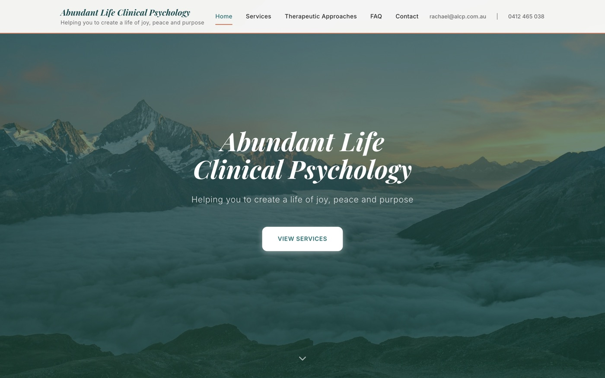

Website · design & build
Abundant Life Clinical Psychology
Full website, design, build & deploy
A calm, credible website for a clinical psychology practice, designed to put new clients at ease and help them find the right service quickly.
- Custom responsive design, mobile to desktop
- Services, therapeutic approaches & FAQ
- Clear enquiry and contact flow
- Live on the practice's own domain